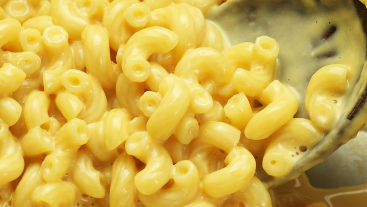

Three Ingredient Mac and Cheese

A quick and easy way to make mac and cheese from scratch. (Credit J. Kenji Lopez-Alt)
Ingredients
- 170g macaroni
- 170g cheddar cheese
- 170g evaporated milk
Directions
- Fill the pan with the macaroni and just enough water to cover it. Add salt and boil on high until almost all the water is evaporated.
- Add evaporated milk, stir frequently until the milk starts boiling.
- Take the pan off heat, stir in the cheddar cheese until fully combined.